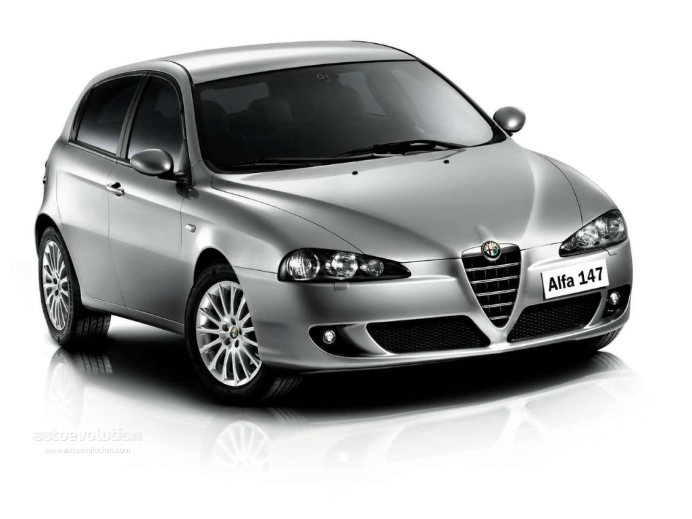
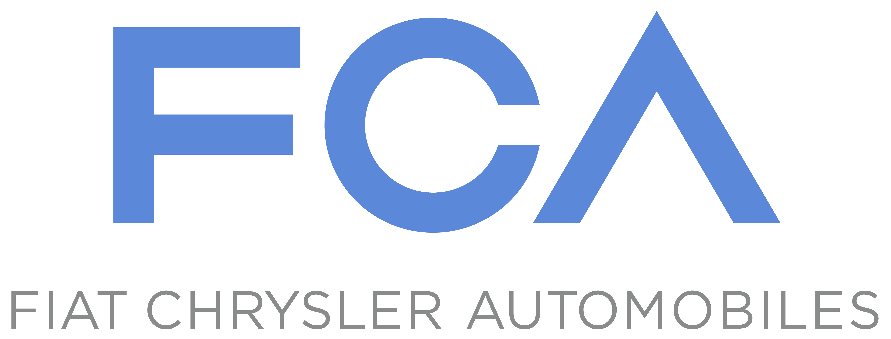

Auto's zijn voor de meesten maar iets om te gebruiken om van punt a naar punt b te reizen. Maar voor sommigen, zoals ik, is het meer een hobby. Om er bijvoorbeeld aan te werken, of rondrijden wanneer je niks beters te doen hebt om tijd te doden.
Ik heb zelf een Alfa Romeo 147 uit 2008 waar ik heel blij mee ben. Het is een 1.9 turbodiesel waardoor je zuiniger, maar ook harder rijd. Je hebt VAG auto's, dat staat voor Volkswagen Auto Group, voor de meeste Duitse auto's. Maar je hebt ook FCA, dat staat voor Fiat Chrysler Automobiles, waar mijn auto zich toe behoort.
 
Deze pagina is gemaakt door: Tarik
Deze pagina is nagekeken door: Ivan